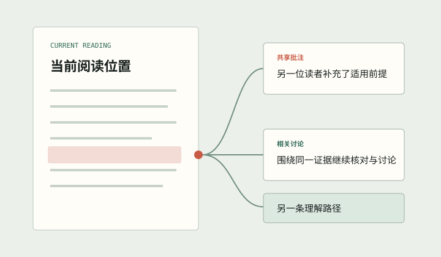

抓住主线
从你最想知道的内容进入，在复杂文献中建立清晰的第一层理解。
LITEASY / EVIDENCE-LED READING
Liteasy 从你最想知道的内容开始，带你沿着词句、证据与关联文献继续探索， 并让每一步理解都能辨明依据。
Liteasy 桌面阅读工作台
从你最想知道的内容进入，在复杂文献中建立清晰的第一层理解。
论文原文、可信外部来源与 AI 独立理解，都有清楚的身份。
从一个词、一句话或一个板块出发，沿自己的问题继续探索。
RESEARCHER'S READING LOOP
Liteasy 把文献、追问、依据与阅读结果放在同一工作台。 你可以随时选择一条线索继续深入，也可以回到原文核对判断。
01 / 05
把当前真正想理解的文献带进桌面阅读工作台。

KNOW THE BASIS
Liteasy 会区分每段理解的依据。来自论文的内容可以回到相关原文位置， 外部知识会标明来源；没有文献依据的内容，也会明确告诉你这是 AI 独立理解。
来自论文
方法通过分层匹配保留关键关系，同时减少需要处理的候选范围。
回到相关原文 →
论文原文 / 相关上下文
WAYS TO UNDERSTAND
同一份材料可以成为逐层讲述、关系网络、图表与示意、文献对比，也可以整理成能够继续编辑和保存的研究记录。
从问题开始
先读懂你最想知道的，再沿词句、板块和关联线索逐层探索。
适合：快速进入一篇复杂文献为什么这项方法能在更少计算量下保留关键关系？
示意内容用于展示理解方式，不代表特定论文的真实结论。

READ TOGETHER / INTUECHO
你可以把批注留在具体文献或阅读位置，并自主决定是否分享。 Liteasy 会通过 Intuecho 把共享批注与正确的文献和版本关联起来。
当你读到同一处内容时，相关讨论、其他读者的补充和不同的理解路径会来到眼前， 帮助你沿着新的线索继续研究。
FIRST EXPERIENCE
加入体验计划，用 Liteasy 读懂最想知道的内容，并把每一步理解变成可以核对、继续和分享的研究路径。